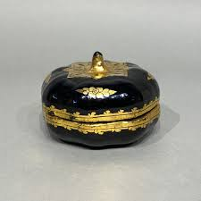
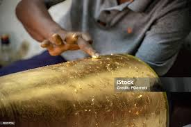
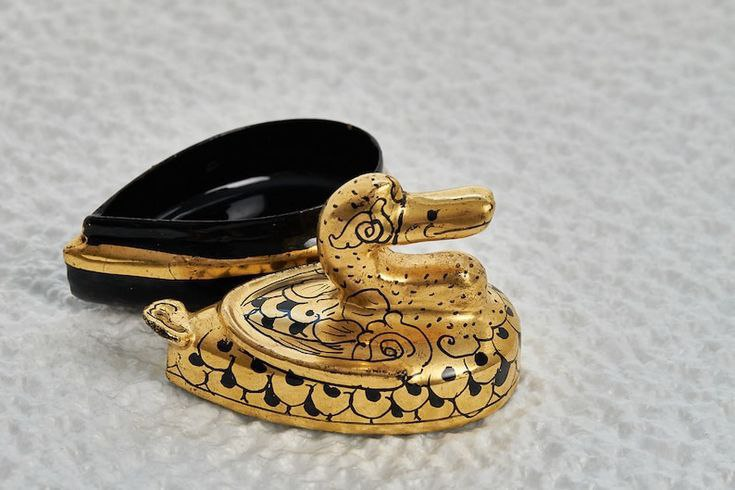
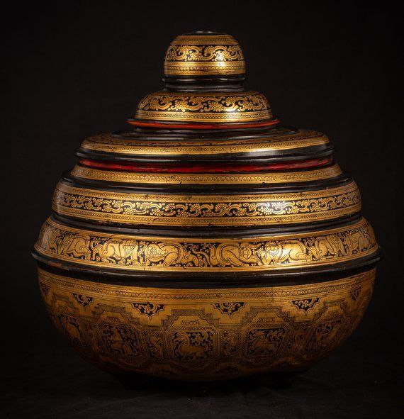

Dating back to the Bagan era, Shwe-zawa is considered the "King of Lacquerware." Historically, it was a royal craft used to decorate palace pillars, monastic chests (Pitaka boxes), and ceremonial offerings for the King. The name "Shwe-zawa" itself refers to the intricate gold floral patterns that symbolize purity and royalty in Myanmar culture.

After the base lacquerware is made (from bamboo or wood), it undergoes at least 7 layers of raw lacquer coating. Each layer is dried and polished until it achieves a "Piano Black" high-gloss finish.
The artisan uses a fine brush made of squirrel hair to paint the design. The paint is a special mixture of Hany-tha-pya (cinnabar) and a water-soluble glue. Importantly, the artisan must paint the negative space or the specific lines where the gold is intended to remain.
While the adhesive is still slightly tacky, genuine 24-karat gold leaves (Shwe-si) are placed over the entire surface. The artisan then uses a soft cotton ball to gently press the gold leaf into every fine line of the painted design.
This is the most magical part. The piece is washed with water. The gold leaf on the unpainted parts is washed away, leaving behind the brilliant gold patterns. This process requires a very steady hand; otherwise, the delicate gold lines could be damaged.

Common themes in Shwe-zawa include the Twelve Zodiac Signs, scenes from the Jataka tales (stories of the Buddha), and traditional patterns like A-kanut (foliage) and Zinn-me (geometric flowers). The complexity of the design determines the final price of the product.
